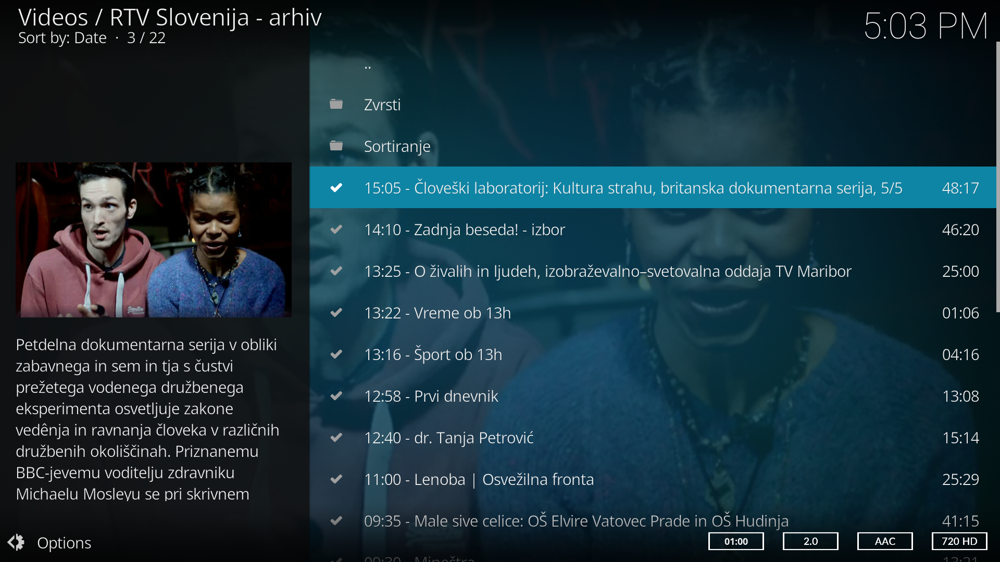
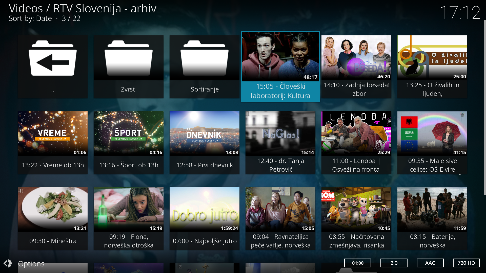
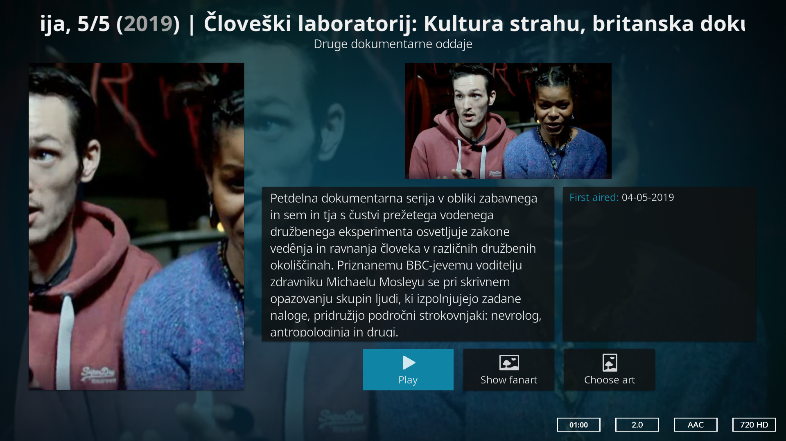

Namesti
REPOZITORIJ
za Kodi
Vključuje dodatke:
- plugin.rtvslo.podcast -
- plugin.rtvslo.live -
---
Za poln dostop do vsebin v arhivu si pridobite uporabniško ime in geslo na https://www.rtvslo.si/registracija
in oboje vnesite v konfiguracijo dodatka.
---
Pomembno obvestilo! Verzije Kodi Leia v18.0 - v18.1 streamov RTVSLO (in morda še katerih
drugih) ne predvajajo pravilno. Zaenkrat preverjeno pravilno deluje samo v17.6 Krypton.
---
- plugin.rtvslo.podcast -
Oddaje:

Oddaje, alternativni pogled:

Media information:

---